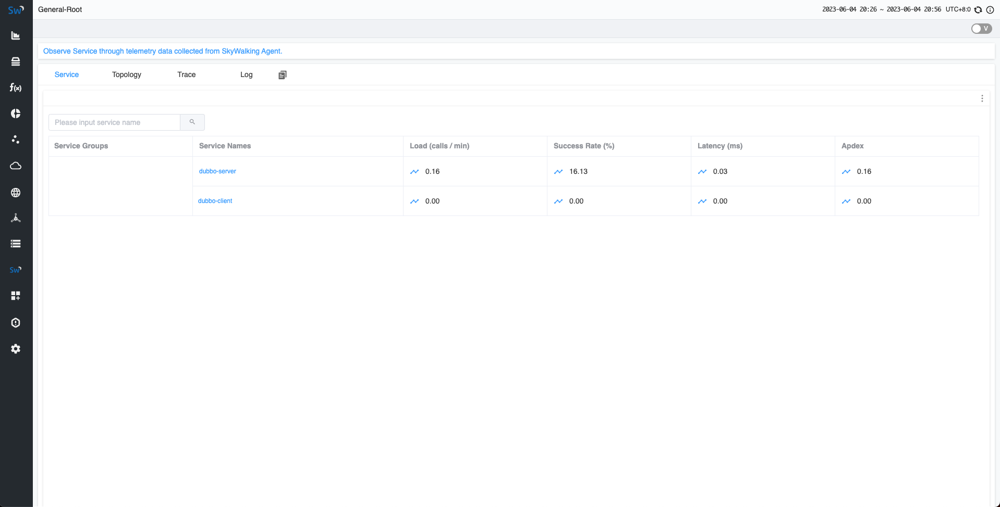
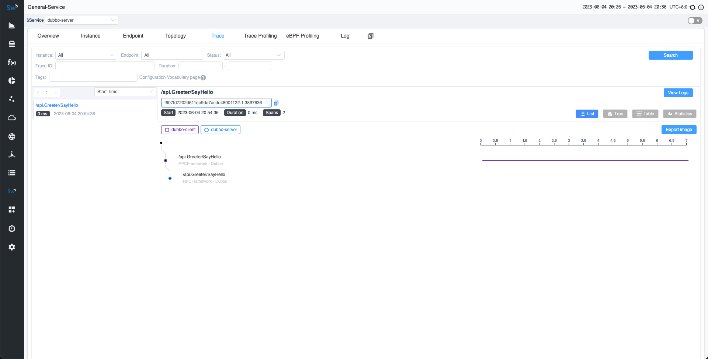
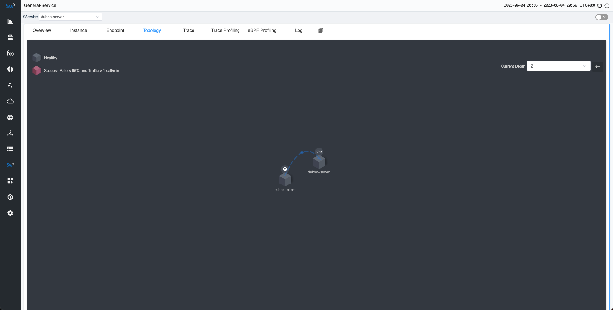

使用SkyWalking go agent快速实现Dubbo Go监控
本文演示如何将 Dubbo-Go 应用程序与 SkyWalking Go 集成，并在 SkyWalking UI 中查看结果。
以前，如果你想要在 SkyWalking 中监控 Golang 应用程序，需要将项目与 go2sky 项目集成，并手动编写各种带有 go2sky 插件的框架。现在，我们有一个全新的项目（ Skywalking Go ），允许你将 Golang 项目集成到 SkyWalking 中，几乎不需要编码，同时提供更大的灵活性和可扩展性。
在本文中，我们将指导你快速将 skywalking-go 项目集成到 dubbo-go 项目中。
演示包括以下步骤：
- 部署 SkyWalking：这涉及设置 SkyWalking 后端和 UI 程序，使你能够看到最终效果。
- 使用 SkyWalking Go 编译程序：在这里，你将把 SkyWalking Go Agent 编译到要监控的 Golang 程序中。
- 应用部署：你将导出环境变量并部署应用程序，以促进你的服务与 SkyWalking 后端之间的通信。
- 在 SkyWalking UI 上可视化：最后，你将发送请求并在 SkyWalking UI 中观察效果。
部署 SkyWalking
请从官方 SkyWalking 网站下载 SkyWalking APM 程序 。然后执行以下两个命令来启动服务:
# 启动 OAP 后端
> bin/oapService.sh
# 启动 UI
> bin/webappService.sh
接下来，你可以访问地址 http://localhost:8080/ 。此时，由于尚未部署任何应用程序，因此你将看不到任何数据。
使用 SkyWalking GO 编译 Dubbo Go 程序
这里将演示如何将 Dubbo-go 程序与SkyWalking Go Agent集成。请依次执行如下命令来创建一个新的项目:
# 安装dubbo-go基础环境
> export GOPROXY="https://goproxy.cn"
> go install github.com/dubbogo/dubbogo-cli@latest
> dubbogo-cli install all
# 创建demo项目
> mkdir demo && cd demo
> dubbogo-cli newDemo .
# 升级dubbo-go依赖到最新版本
> go get -u dubbo.apache.org/dubbo-go/v3
在项目的根目录中执行以下命令。此命令将下载 skywalking-go 所需的依赖项：
go get github.com/apache/skywalking-go
接下来，请分别在服务端和客户端的main包中引入。包含之后，代码将会更新为：
// go-server/cmd/server.go
package main
import (
"context"
)
import (
"dubbo.apache.org/dubbo-go/v3/common/logger"
"dubbo.apache.org/dubbo-go/v3/config"
_ "dubbo.apache.org/dubbo-go/v3/imports"
"helloworld/api"
// 引入skywalking-go
_ "github.com/apache/skywalking-go"
)
type GreeterProvider struct {
api.UnimplementedGreeterServer
}
func (s *GreeterProvider) SayHello(ctx context.Context, in *api.HelloRequest) (*api.User, error) {
logger.Infof("Dubbo3 GreeterProvider get user name = %s\n", in.Name)
return &api.User{Name: "Hello " + in.Name, Id: "12345", Age: 21}, nil
}
// export DUBBO_GO_CONFIG_PATH= PATH_TO_SAMPLES/helloworld/go-server/conf/dubbogo.yaml
func main() {
config.SetProviderService(&GreeterProvider{})
if err := config.Load(); err != nil {
panic(err)
}
select {}
}
在客户端代码中除了需要引入skywalking-go之外，还需要在main方法中的最后一行增加主携程等待语句，以防止因为客户端快速关闭而无法将Tracing数据异步发送到SkyWalking后端：
package main
import (
"context"
)
import (
"dubbo.apache.org/dubbo-go/v3/common/logger"
"dubbo.apache.org/dubbo-go/v3/config"
_ "dubbo.apache.org/dubbo-go/v3/imports"
"helloworld/api"
// 引入skywalking-go
_ "github.com/apache/skywalking-go"
)
var grpcGreeterImpl = new(api.GreeterClientImpl)
// export DUBBO_GO_CONFIG_PATH= PATH_TO_SAMPLES/helloworld/go-client/conf/dubbogo.yaml
func main() {
config.SetConsumerService(grpcGreeterImpl)
if err := config.Load(); err != nil {
panic(err)
}
logger.Info("start to test dubbo")
req := &api.HelloRequest{
Name: "laurence",
}
reply, err := grpcGreeterImpl.SayHello(context.Background(), req)
if err != nil {
logger.Error(err)
}
logger.Infof("client response result: %v\n", reply)
// 增加主携程等待语句
select {}
}
接下来，请从官方 SkyWalking 网站下载 Go Agent 程序 。当你使用 go build 命令进行编译时，请在 bin 目录中找到与当前操作系统匹配的代理程序，并添加 -toolexec="/path/to/go-agent -a 参数。例如，请使用以下命令：
# 进入项目主目录
> cd demo
# 分别编译服务端和客户端
# -toolexec 参数定义为go-agent的路径
# -a 参数用于强制重新编译所有依赖项
> cd go-server && go build -toolexec="/path/to/go-agent" -a -o go-server cmd/server.go && cd ..
> cd go-client && go build -toolexec="/path/to/go-agent" -a -o go-client cmd/client.go && cd ..
应用部署
在开始部署应用程序之前，你可以通过环境变量更改 SkyWalking 中当前应用程序的服务名称。你还可以更改其配置，例如服务器端的地址。有关详细信息，请参阅文档 。
在这里，我们分别启动两个终端窗口来分别启动服务端和客户端。
在服务端，将服务的名称更改为dubbo-server：
# 导出dubbo-go服务端配置文件路径
export DUBBO_GO_CONFIG_PATH=/path/to/demo/go-server/conf/dubbogo.yaml
# 导出skywalking-go的服务名称
export SW_AGENT_NAME=dubbo-server
./go-server/go-server
在客户端，将服务的名称更改为dubbo-client：
# 导出dubbo-go客户端配置文件路径
export DUBBO_GO_CONFIG_PATH=/path/to/demo/go-client/conf/dubbogo.yaml
# 导出skywalking-go的服务名称
export SW_AGENT_NAME=dubbo-client
./go-client/go-client
在 SkyWalking UI 上可视化
现在，由于客户端会自动像服务器端发送请求，现在就可以在 SkyWalking UI 中观察结果。
几秒钟后，重新访问 http://localhost:8080 的 SkyWalking UI。能够在主页上看到部署的 dubbo-server 和 dubbo-client 服务。

此外，在追踪页面上，可以看到刚刚发送的请求。

并可以在拓扑图页面中看到服务之间的关系。

总结
在本文中，我们指导你快速开发dubbo-go服务，并将其与 SkyWalking Go Agent 集成。这个过程也适用于你自己的任意 Golang 服务。最终，可以在 SkyWalking 服务中查看显示效果。如果你有兴趣了解 SkyWalking Go 代理当前支持的框架，请参阅此文档 。
将来，我们将继续扩展 SkyWalking Go 的功能，添加更多插件支持。所以，请继续关注！